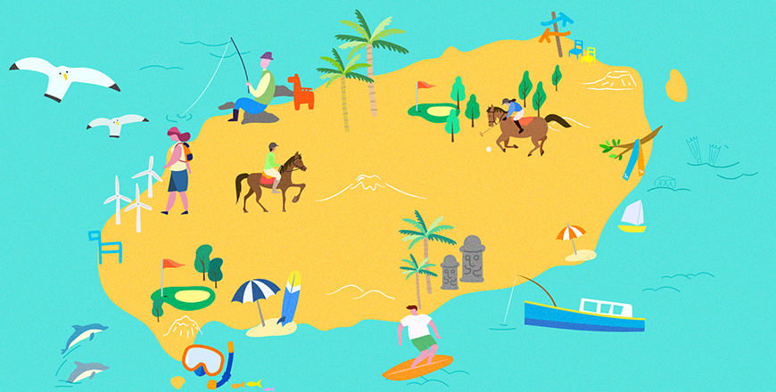

기획취재콘텐츠
- Home
- 제주라이프
- 기획취재콘텐츠
제주형 레저산업, 국내외 관광객을 유혹하다. 1부새로운 글



제주도는 명실상부한 레저 스포츠와 액티비티의 천국이다. 화산 폭발로 형성된 가파른 한라산부터 유려한 구릉을 갖춘 중산간, 넓은 평야와 바다에 이르기까지 제주 곳곳 다채로운 레저와 액티비티 스팟이 가득하다. 다양한 형태의 지형은 제주도가 레저 산업의 메카로 거듭날 수 있는 최적의 환경 조건을 제공한다. 사계절 내내 온화한 기후, 풍부한 바람과 일조량 역시 레저산업 성장에 빼놓을 수 없는 핵심 요소다.
명소 관광과 같이 제주의 아름다운 자연 경관을 보는 여행은 한결같이 선호되지만, 더 나아가 직접 자연 속으로 들어가 온몸으로 체험하고 느끼는 여행에 대한 선호도도 높은 편이다. 지난 6월 제주관광공사가 발표한 <향후 1년 제주여행계획 설문조사>에 따르면 향후 여행에서의 무엇을 할 것인지에 대한 문항에 응답자의 77.7%가 자연경관 감상, 52.6%는 트레킹, 12.7%는 골프·승마 등의 레포츠 활동을 하겠다고 중복 응답했다.
국내외 관광객을 유혹하여 제주 관광 산업의 한 축을 견인하는 제주형 레저 산업의 특징과 매력은 무엇일까? 골프, 승마와 같은 제주 대표 레포츠부터, 여행객들의 이목과 발길을 끄는 트레킹, 호핑투어 등 다양한 레저 산업의 세계를 들여다본다.
천혜의 자연 환경 속 그린을 누비는 여유 – 골프
한국골프장경영협회에 따르면 2020년 1월 기준 국내 운영 중인 골프장 494개 중 41개가 제주도에 있다. 이는 경기도와 강원도, 경북에 이어 4번째로 많은 숫자다. 제주도의 골프 산업은 전국적으로 난립한 골프장 간의 치열한 경쟁과 회원제 골프장 대상 개별소비세 면제 폐지 정책으로 한때 주춤하기도 했지만 올해 코로나 19여파로 인한 특수와 개별소비세 감면 정책 부활로 다시금 날갯짓을 하고 있다.
자연 속 넓은 야외 공간에서 소수 그룹 단위로 안전하게 즐길 수 있는 스포츠라는 인식이 확산되고, 사실상의 해외여행이 불가능해지자 골프 여행객들이 제주로 발길을 옮기는 덕분에 코로나19 사태에도 불구하고 제주의 골프장은 비교적 선전했다는 평가를 받고 있다.
올 상반기 제주 입도 관광객은 크게 줄었지만 도내 방문객이 증가한 덕분에 1~3월 골프장 방문객은 35만 8550명으로 지난해 같은 기간 37만3067명과 비교해 불과 3.9%만 줄어들었다. 이후 차츰 회복기간을 거쳐 8월 현재 방문객수는 코로나19 사태 이전과 유사한 수준이다. 제주도 골프장들은 여름 휴가철을 맞아 풀 부킹(full-booking·예약완료) 사례가 이어지며 쾌재를 부르고 있다.
- (좌)더CJ컵이 열리는 클럽 나인브릿지의 18번 홀 ⓒCJ그룹,
(우)11번 홀 전경, 제주의 자연과 어우러진 아름다운 코스가 돋보인다. ⓒCJ그룹 -
(우)11번 홀 전경, 제주의 자연과 어우러진 아름다운 코스가 돋보인다. ⓒCJ그룹 -
골프의 매력은 나지막한 구릉지대, 드넓게 펼쳐진 초원을 여유롭게 거닐다 집중의 결정체인 힘찬 스윙을 날리는 것이다. 하지만 여기에 ‘제주도’라는 지역적 특성이 반영되면 몇 가지 묘미가 더해진다. 사계절 내내 골프를 즐기기 좋은 온화한 기후, 깨끗한 공기, 어디서든 보이는 한라산의 위용과 오름이 늘어선 풍경, 가끔은 종잡을 수 없는 바람과 그린을 뛰노는 노루, 세계적 수준의 코스를 갖춘 골프장 시설 등이 제주에서의 골프를 더욱 즐겁게 해주는 핵심요소로 꼽힌다.
국내에서 최초로 개최된 PGA투어 <더 CJ컵@나인브릿지>를 담당하는 김유상 CJ그룹 스포츠마케팅 부장에 따르면, 많은 참가 선수들이 제주도의 자연 환경을 잘 담아 낸 코스에 대해 찬사를 아끼지 않고, 특히 제주도의 바람에 따라 매우 다른 변화를 보여주는 코스에 대해 깊은 인상을 받는다고 한다. 조던 스피스 선수는 “제주도는 너무 아름답다. 코스를 TV를 통해서 경험했었는데, 연습라운드를 통해 확인한 코스는 완벽하고, 많은 상상력을 통해 탄생한 코스라고 생각한다. 또한, 바람에 대응해서 티샷을 잘 해야 한다. 나에게 잘 맞을 것 같은 코스다.”라고 인터뷰에서 밝히기도 했다고.
이처럼 제주도 골프장에는 국내외 골프 선수와 마니아들을 사로잡아 지속해서 제주로 발길을 이어지게 하는 매력포인트가 넘친다. 잠시 주춤했던 골프 산업의 부흥을 위해 골프장마다 다양한 상품 개발과 공격적 마케팅 등 골프 산업계의 자구적인 노력이 필요하다는 목소리도 높지만, 제주도에서만 누릴 수 있는 천혜의 지형 조건과 경관은 골프가 제주도 레저산업의 한 축을 담당할 수 있도록 하는 강점임에는 분명하다.
말 산업 특구의 명성이 레저 스포츠의 명성으로 - 승마 & 폴로
최근 제주도와 제주관광공사는 여름철 제주에서 즐길 수 있는 힐링·치유 콘텐츠인 ‘제주 웰니스관광 15선’을 발표했다. '웰니스(Wellness)'란 웰빙(Well-being)과 행복(Happiness), 건강(Fitness)의 합성어로 신체적, 정신적, 사회적으로 건강한 상태를 의미한다. 자연·숲 치유, 힐링·명상, 뷰티·스파, 만남·즐김 치유 4개 주제로 구성된 15개 관광지 내에는, 제주도의 대표 체험 콘텐츠인 승마 역시 포함되어 있다.
전국 최초의 말 산업 특구라는 명성답게 제주도내에 운영 중인 승마장은 약 58곳에 이른다. 대부분 승마 교육과 체험 프로그램을 운영하고 있는데, 초보자들도 쉽게 배우고 안전하게 체험할 수 있어 인기가 높다. 승마장마다 말을 타고 가볍게 승마장을 도는 간단한 체험부터, 숲길, 해변가, 산악 코스 트레킹 등 다양한 프로그램을 선보이고 있다.
- 옷귀마 테마타운의 승마 트레킹 프로그램 ⓒ옷귀마테마타운 -
웰니스 관광지로 선정된 옷귀 편백숲 승마의 경우 전문 코치의 교육에 따라 마사에서 말을 끌고 나오는 것부터 실전 승마까지 차근차근 배울 수 있는 강습 승마와, 총 10.5km의 삼나무 숲길을 말들과 함께 자유롭게 산책하는 외승 코스, 10월~4월까지 표선 해변에서 즐길 수 있는 해변 외승 코스, 오전에 출발하여 성판악 구간까지 체험하고 돌아오는 1일 코스의 산악 트레킹 프로그램 등을 운영 중이다. 승마의 묘미는 살아있는 말과 교감하는 것도 있지만, 자연의 내음이 가득한 숲과 바다 코스에서 때론 느리게, 때론 빠르게 말을 타고 달리며 자연과 하나 되는 감각을 느끼는 데 있다.
한편, 국내 중 제주에서만 즐길 수 있는 이색 스포츠가 있다. 바로 폴로다. 4 : 4 인원 구성으로 두 팀이 대결하는 폴로는 선수가 말을 타고 달리며 말렛이라 불리는 스틱으로 볼을 쳐서 상대팀의 골대 안으로 넣어 승패를 가리는 박진감 넘치는 스포츠다. 흔히 왕족이나 귀족들만이 즐기는 고급 스포츠의 대명사로 널리 알려져 있는데, 이 폴로를 즐길 수 있는 한국폴로컨트리클럽이 제주도에 있다.
- 한국폴로컨트리클럽에서 열린 해외 선수단과의 교류 경기 모습 ⓒ한국폴로컨트리클럽 -
제주시 구좌읍 행원리 일대 21만3277m²(약 6만4500평)규모로 조성되어 2010년 오픈한 한국폴로컨트리클럽은 전 세계적으로도 손가락 안에 드는 시설과 설비, 시스템, 서비스를 갖추고 있는 것으로 명성이 자자하다. 해외 유수의 클럽을 경험한 슈퍼리치 선수들도 놀라움을 표현할 정도라고.
한국폴로컨트리클럽의 오랜 회원인 박용주 선수는 “폴로는 신사적이고 섬세한 스포츠면서도 스포츠로서의 기능과 사교클럽으로서의 기능을 다 가지고 있다고 볼 수 있다. 경기를 할 때면 머리가 백지가 될 정도로 온전히 몰입하여 모든 스트레스를 날려버리고 또 한주를 활기차게 살아갈 수 있는 원동력을 얻을 수 있다는 게 폴로의 매력”이라고 설명한다. 또 “폴로컨트리클럽이 한국이라는 나라를 아름답게 기억할 수 있는 상징적인 섬인 제주도에 있다는 점, 바다와 산 등 자연이 가까이에 있는 것이 큰 장점이다.”라고 덧붙였다.
걸어서 제주 속으로 - 올레걷기·트레킹
'걷기’하면 떠오르는 대표 여행 장소로 제주 올레를 꼽는 사람들이 많다. 최근 문화체육관광부와 한국관광공사가 발표한 '2019년 걷기 여행 실태조사'에 따르면 걷기 여행을 즐기는 젊은 층이 증가하고 이른바 '혼행'(혼자여행) 트렌드에 맞춰 '나 홀로 걷기' 여행을 즐기는 경우가 부쩍 늘어난 것으로 나타났고, 지난 1년간 가장 많이 방문한 걷기 여행길은 역시 제주올레(15.9%)가 차지했다.
2007년 첫 코스를 개장한 제주 올레는 제주도를 걸어서 여행할 수 있도록 조성한 장거리 도보 여행길을 지칭하는 것으로, 코스는 총 26개, 거리는 425km에 달한다. 여행자들은 제주 올레를 걸으며 제주 구석구석을 눈에 담을 수 있다는 점, 앞으로 뻗어나간 길을 무작정 걸으며 고민과 복잡한 생각을 정리할 수 있다는 점을 매력으로 꼽는다.
- 제주올레걷기축제 행사 모습(2019) ⓒ사단법인제주올레 -
제주 올레를 만들고 관리하는 <사단법인 제주올레>는 ‘걷는 사람, 길 위에 사는 지역민 그리고 길을 내어준 자연이 함께 행복한 길을 목표로 ‘놀멍, 쉬멍, 걸으멍 고치(함께) 가는 길’을 만드는 것을 표방하고 있다. 올레 조성 및 정비는 물론 여행·교육·환경·문화/예술·지역 커뮤니티 등 다양한 분야의 활성화를 위한 활동도 병행하고 있고, 매년 올레걷기 축제를 열어 올레를 사랑하는 ‘올레꾼(올레를 걷는 사람을 의미)’이 늘어날 수 있도록 노력하고 있다.
올레 걷기 외에 또 하나의 걷기여행의 방식으로 트레킹1)을 빼놓을 수 없다. 트레킹은 등반과 하이킹의 중간적 형태로 모든 장비와 짐을 메고 하루 15~20km 정도를 걷는 것이 특징이다. 최근 한라산이나 오름, 사려니 숲길, 특정 마을 등을 코스로 제주의 청정 자연 속을 거니는 트레킹 프로그램이 각광받고 있다. 트레킹의 장점은 제주 청정 자연 속을 거닐며 있는 그대로의 자연을 오감을 활용해 만끽하는 것, 그리고 교통수단을 이용해 빠르게 지나쳤을 때는 보지 못했던 제주의 매력에 푹 빠질 수 있다는 점이다.
※ 1) 전문적인 등산 기술이나 지식 없이도 즐길 수 있는 산악 자연 답사 여행. 산의 정상을 오르는 것이 목적이 아니고 산의 풍광을 즐기는 여행의 한 형태이며, 이런 등산을 하는 사람을 트레커라고 부른다.
출처 : 네이버 지식백과 등산상식사전 (https://terms.naver.com/entry.nhn?docId=1690495&cid=42898&categoryId=42898)
출처 : 네이버 지식백과 등산상식사전 (https://terms.naver.com/entry.nhn?docId=1690495&cid=42898&categoryId=42898)
- 피엘라벤 클래식 코리아 2019 대회 모습 ⓒ피엘라벤코리아 -
일례로 스웨덴의 아웃도어 브랜드 지사 피엘라벤 코리아는 지난해 제주에서 트레킹 대회인 <피엘라벤 클래식 코리아 2019>를 개최했다. 관계자에 따르면 스텝 제외 총 400여명이 참여한 2박 3일 일정의 한라산과 둘레길 코스는 난이도가 높은 편이었지만 제주의 놀라운 자연 경관 속에서 자연을 사랑하는 방법을 배우는 힐링의 시간을 제공함으로써 국내외 참가자 모두에게 큰 만족을 이끌어 냈다고.
이처럼 걸어서 제주를 만끽하고자 하는 여행자들이 늘고 있는 가운데, 최근 ‘걷기여행길의 조성·관리 및 지원에 관한 법률안’이 발의 되는 등 제주를 포함한 전국의 ‘걷는 길’을 체계적으로 관리·지원하기 위한 제도가 마련될 수 있을 것으로 보인다. 국가적 뒷받침을 통해 보다 안전하고 체계적인 국내 걷기 여행 문화가 활성화되기를 기대해본다.
제주 청정 바다가 선사하는 선물 – 호핑투어
제주도는 온 사방이 바다로 둘러 싸여있고, 수많은 해수욕장과 독특한 수중비경 등 다양한 해양레저 인프라를 갖추고 있어 우리나라 해양레저의 최적지로 손꼽힌다. 2018년 도에서 조사·발표한 <수중 비경 10선>이 그 대표적인 예로, 바다 속 동굴·아치·주상절리·해저 분화구·연산호 군락 등을 새로운 수중 관광 상품으로 발굴하여 그 아름다움을 널리 알렸다.
이처럼 아름다운 자원이 가득한 바다를 배경으로 최근 관광객들 사이에서 화제가 되는 액티비티가 있다. 바로 호핑투어다. 호핑투어는 배를 타고 바다로 나가 스노클링이나 다이빙을 하며 바다를 즐기고 물속 경관과 물고기를 감상하는 것을 말한다. 흔히 동남아 지역의 관광 상품으로 널리 알려져 있지만 제주도에서도 즐길 수 있어 인기를 끌고 있다.
- 호핑투어를 떠나는 선박의 모습 ⓒ디스커버 제주 -
대표적인 상품으로 제주 액티비티 전문 기획 운영회사 디스커버제주에서 운영하는 ‘볼레낭개 호핑투어’가 있다. 볼레낭개 호핑투어는 2018년 런칭 이후 관광객들의 폭발적인 반응을 얻었다. 볼레낭개는 서귀포시에 위치한 보목항을 지칭하는 제주어로, 보목항에서 지역 토박이 주민의 어선을 이용해 천연기념물 제 18호로 지정된 섶섬으로 이동하여 청정 바닷 속 산호초와 물고기 떼를 감상하는 활동이다. 체험객들은 바다아래 숨겨진 비경이 선사하는 아름다움과 경이로움에 감탄을 금치 못한다고.
- 스노클링을 하며 바닷 속 비경을 감상할 수 있다. ⓒ디스커버 제주 -
볼레낭개 호핑투어는 해양수산부가 주관하는 제4회 우수해양관광상품 공모전에서 가장 우수한 상품으로 뽑히기도 했다. 디스커버 제주는 볼래낭개 호핑투어의 성공을 발판으로 사계포구에서 출발하는 형제섬 호핑투어도 런칭했는데, 형제섬 호핑투어는 지역 해녀와 함께하는 프로그램으로 더욱 안전하게 즐길 수 있다. 이처럼 디스커버제주의 체험 프로그램은 지역 주민의 인프라를 활용하여 이들이 지속적으로 수익을 낼 수 있는 방식으로 운영된다는 점이 특징이라 볼 수 있다.
제주형 레저 산업의 성장, 앞으로도 계속될 것
앞서 언급한 골프와 승마·폴로, 올레걷기와 트레킹, 호핑투어 외에도 제주에는 부존하는 환경 자원을 활용한 수많은 레포츠와 액티비티들이 이뤄지고 있다. 전문가들은 레저 스포츠의 종류를 다양화 하는 것도 중요하지만 코로나19 시대를 맞아 비대면 서비스로 변화 시키는 등 시대와 소비자의 요구에 맞는 상품을 만드는 것이 병행되어야 한다고 조언한다. 제주 관광업계의 위기를 기회로 만들기 위해서 앞으로도 보다 다양한 레저스포츠와 액티비티들이 발굴 · 개발되길 기대해 본다.
다음글